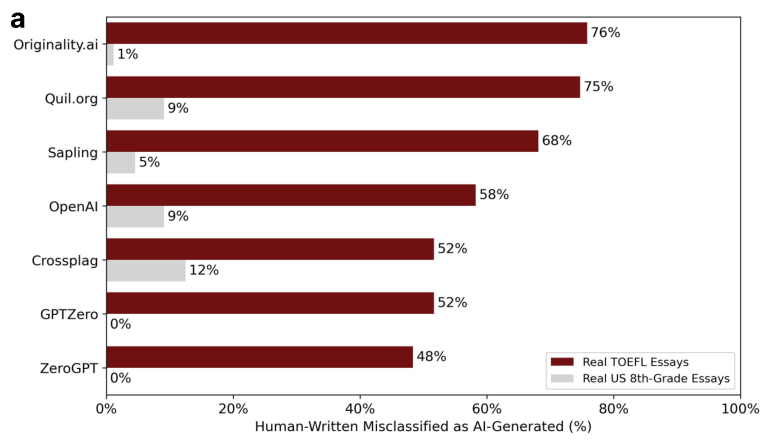

AI writing detectors flag non-native students' own essays as machine-written
Turnitin sold the tool to thousands of schools promising it would misread human writing as AI under 1 percent of the time, and students were accused of cheating on its flags.
Why this matters
If you have written anything since 2023, a program has probably scored the odds that a machine wrote it for you. Schools were the first to run those scores at scale, over the essays their own students turned in, and the scores were wrong often enough to end in real accusations. This lesson follows one detector from its launch to the day a major university disabled it. Every one of these tools has the same thing at its core: it does not read for meaning, it reads for how predictable your sentences are. Once you can see that, you can see why a student writing careful, plain English is the one most likely to be called a cheat.
- 01
- Tokenize the same sentence by letters instead of words, and its perplexity falls 66 percent: how a model's surprise at text is scored, and why the same sentence can score two ways.
- 02
- CNET let an AI draft its finance advice under a staff byline: the mirror-image failure of the same era, machine text passed off as a person's.
A detector for everyone Turnitin already served
In April 2023, Turnitin switched on an AI-writing detector for every school that already ran its plagiarism software, thousands of institutions and millions of students, with no new contract to sign.1 The sales pitch was a single number: the detector would wrongly label human writing as AI less than 1 percent of the time, counted across whole documents.1 The false-positive rate is the fraction of genuine human writing a detector calls machine-written, and every point of it is a real student's own sentence flagged as something a program produced. The tool ran at scale immediately: 38.5 million submissions passed through it by May 14, with 9.6 percent of documents marked as more than 20 percent AI writing and 3.5 percent as more than 80 percent.2
What one percent means across 75,000 papers
The Washington Post reported students at several universities charged with using AI on work they said they had written themselves, some of them watching graduation slip while the charge was worked out.3 Turnitin's own guidance said the score should not be the sole basis for action against a student.3 Schools used it as exactly that.
One percent sounds like a rounding error until it meets the size of a university. In 2022, Vanderbilt University's students submitted about 75,000 papers to Turnitin. At the detector's claimed 1 percent false-positive rate, roughly 750 of those papers could have come back wrongly flagged as AI-written.4 On August 16, 2023, Vanderbilt disabled the detector for the foreseeable future. Among its reasons it named the false accusations, the tool's refusal to explain how it reached a verdict, and evidence that detectors flag writing by non-native English speakers more often than writing by native speakers.4 That last reason is not particular to Turnitin. It is how every one of these detectors works.
Why a plain sentence reads as machine-written
A detector never reads for meaning. It reads for predictability. A language model is trained to produce the likeliest next word, so its output tends to run smooth and unsurprising, each word falling about where the model would expect. A detector turns that around: it scores how surprised a model is by a passage and calls the unsurprising ones machine-written. The measure it uses is perplexity. An earlier lesson works through how perplexity is computed; what matters here is only the direction. Low perplexity, meaning predictable word choice, reads as machine. High perplexity, meaning word choice a model did not see coming, reads as human.
The trouble is that a great deal of human writing is predictable. A writer with a smaller working vocabulary, or one composing in a language they learned later, reaches for the common word because the common word is the one they have. That writing is not machine-made. It simply sits in the same low-perplexity range the detector was built to flag.
A 2023 study in the journal Patterns measured this directly. The researchers ran seven commercial detectors over essays written by non-native English speakers for the TOEFL exam and over essays written by US eighth-graders. On the eighth-grade essays the detectors were close to perfect. On the non-native essays they were wrong an average of 61.22 percent of the time, and on 18 of the 91 TOEFL essays all seven detectors agreed, unanimously, that a human's writing was AI-written.5 Those 18 essays had measurably lower perplexity than the rest.5

Turnitin's own detector was not among the seven tested. But it keys on the same statistical signature, and Vanderbilt named this bias when it disabled the tool. The clinching test in the study was to change nothing but the words. When the researchers asked a language model to rewrite the TOEFL essays with richer vocabulary, the average false-positive rate fell from 61.22 percent to 11.77 percent.5 The students had not become better writers or more honest ones. Their sentences had become less predictable, and the detectors, keyed to predictability, stopped flagging them.
The best possible detector approaches a coin flip
The bias is not a bug a better detector could patch out. In a 2023 paper, a group of researchers proved there is a ceiling on any detector at all. A detector can only separate human from AI text as far as the two kinds of text actually differ, and models are trained precisely to erase that difference. As a model gets better at sounding human, the best score any detector can reach falls toward a coin flip.6 That is a limit on the whole category, not a flaw in one vendor's build.
The same paper showed the ceiling is not theoretical. Running a paraphraser over AI text, so a second model rewords what the first one wrote, collapses the detectors people actually sell. The scores below are each out of 100, but they are not one scale. DetectGPT's is an AUROC, where 50 is a coin flip and a lower score is worse than one; the other two are detection rates, the share of AI or watermarked text caught, and their floor is zero.
| Detector | What is scored | Before | After |
|---|---|---|---|
| DetectGPT | detection AUROC, 50 is a coin flip | 96.5% | 25.2% |
| OpenAI RoBERTa | AI text caught at a 1% false-alarm setting | 100% | 60% |
| Watermarking | watermarked text detected | 99.3% | 9.7% |
The company with the most reason to make detection work had already conceded the point. OpenAI, which builds the models the detectors are chasing, launched its own AI Text Classifier in January 2023. On OpenAI's own test set it correctly caught 26 percent of AI-written text and wrongly flagged human text 9 percent of the time.7 Six months later OpenAI pulled it. The company that trains the text was flagging fewer than three AI passages in ten and missing far more than it caught.8
Where the tool is still making the call
The two companies drew opposite lessons from the same evidence. OpenAI withdrew its detector outright.
As of July 20, 2023, the AI classifier is no longer available due to its low rate of accuracy.7 OpenAI, the note it left on its classifier announcement
Turnitin did not withdraw anything. It kept the detector on sale and wrapped it in caveats. Its chief product officer, Annie Chechitelli, conceded that the real-world false-positive rate ran higher than the launch number. She put the sentence-level rate at about 4 percent, against the under-1 percent Turnitin had claimed for whole documents. The tool now prints an asterisk on any result below 20 percent AI, the band where the wrong flags cluster.9 The detector still runs today, inside the plagiarism software schools were already paying for, still producing a number an instructor can read as proof. The number is worst for the students who write in the plainest English, and a strong enough model clears it for anyone who thinks to paraphrase. It still decides cases anyway.
The takeaway
An AI-writing detector scores how predictable your words are and calls the predictable ones machine-made. That one fact explains both ways it goes wrong. Writing that is plain by habit or by a second language sits in the range it flags, so it accused non-native students at rates a peer-reviewed study put many times above the vendor's claim. Writing that has been run through a paraphraser climbs out of that range, so a real cheat can walk past it. OpenAI read those results and pulled its detector; Turnitin read them, added an asterisk, and kept selling. A low score is a statement about predictable writing, never about honesty. The students most likely to be called cheats by it are the ones who write the plainest, most careful English, and they are still being judged by it today.
- 01
- Liang et al., "GPT detectors are biased against non-native English writers": the full study behind the bias numbers, including the vocabulary-rewrite experiment.
- 02
- Sadasivan et al., "Can AI-generated text be reliably detected?": the proof that a strong enough model drives any detector toward a coin flip, and the paraphrasing attacks that show it.
Sources
- Turnitin · The launch of Turnitin's AI writing detector, and the road ahead
- K-12 Dive · Turnitin's AI detector: early usage figures and where false positives cluster
- The Washington Post · What happens when students are falsely accused of using AI
- Vanderbilt University · Guidance on AI detection, and why we're disabling Turnitin's AI detector
- Liang, Yuksekgonul, Mao, Wu & Zou · GPT detectors are biased against non-native English writers (Patterns, 2023)
- Sadasivan, Kumar, Balasubramanian, Wang & Feizi · Can AI-generated text be reliably detected? (2023)
- OpenAI · New AI classifier for indicating AI-written text
- Search Engine Land · OpenAI's AI classifier is no longer available
- Inside Higher Ed · Turnitin's AI detector has higher-than-expected false positives